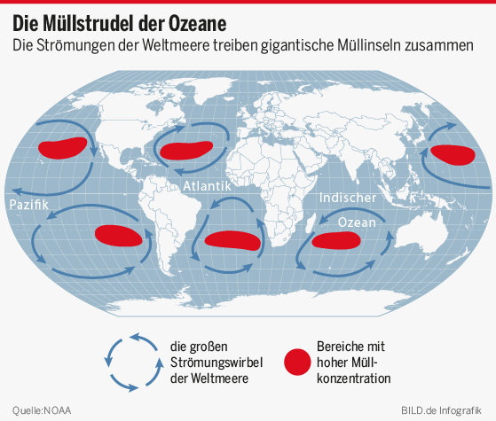

Plastik
Plastik ist wie eine Seuche die an unserem Konsum gebunden ist. Plastik ist eine Material was einfach zu verwenden ist und man kann es in jede beligibe Form pressen. Günstig ist es auch was es sehr lukrativ für Großkonzerne macht. Viele Tiere sterben durch Plastik jedes Jahr. Es gibt riesige Gebiete im Pazifik die nur mit Plastik überstreut sind.  Es gibt aber noch eine Schlimmere Sache als nur das Plastik in den Ozeanen. Und das ist Mikroplastik. Noch nie von gehört? Das ist nähmlich Plastik der durch erosion in für das Auge unsichtbare Stücke zerkleinert wurde. Diesen Mikroplastik essen dann Tiere. Das Plastik klettert dann die Nahrungskette hoch bis es dann beim Menschen ankommt und wir es essen. Jedes Jahr isst ein Mensch Plastik Äquivalent zu einem Esslöfel. Es gibt aber hoffnung und zwar könnte man in Zukunft nicht nur die Ozeane Säubern sondern auch das Plastik von Flaschen in einen Umweltfreundlichen Agar agar Ball formen. Trotzdem ist noch abzuwarten ob investoren diese Idee als Marktfreundlich ansehen und in Massenproduktion setzten.